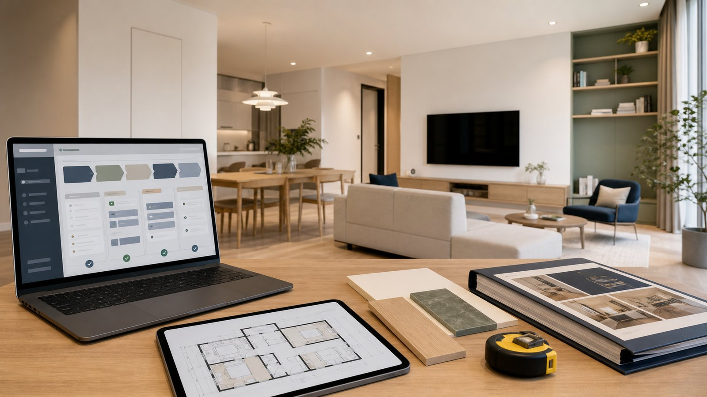

AI가 운영하는 인테리어, 무엇이 다른가

AI가 대신 결정한다는 뜻이 아닙니다. 빠른 응대는 AI가, 중요한 결정은 사람이 — 그 경계를 시스템으로 지킵니다.
AI가 하는 일
24시간 상담 접수, 문의 요약·분류, 예상견적, 안내문 초안까지. 고객을 기다리게 하지 않고, 대표의 시간을 아낍니다.
사람이 하는 일
돈·계약·고객 발송은 반드시 대표가 승인합니다. AI는 판단을 돕는 비서이지 결정권자가 아닙니다.
그래서 남는 것
빠른 응대와 신중한 결정이 동시에 가능해집니다. 그리고 모든 과정이 기록으로 남아 신뢰가 쌓입니다.